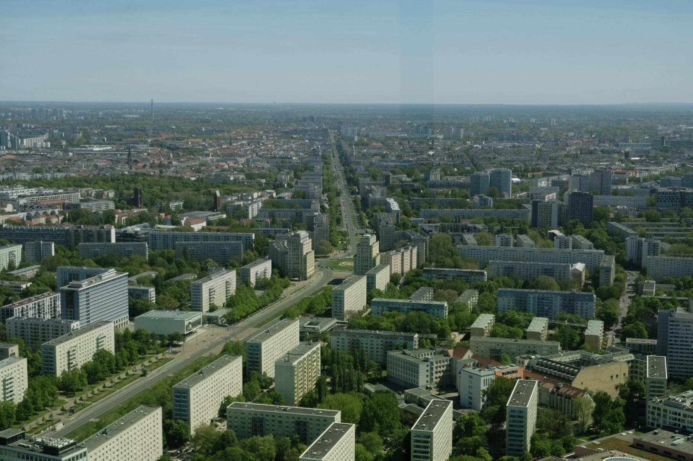
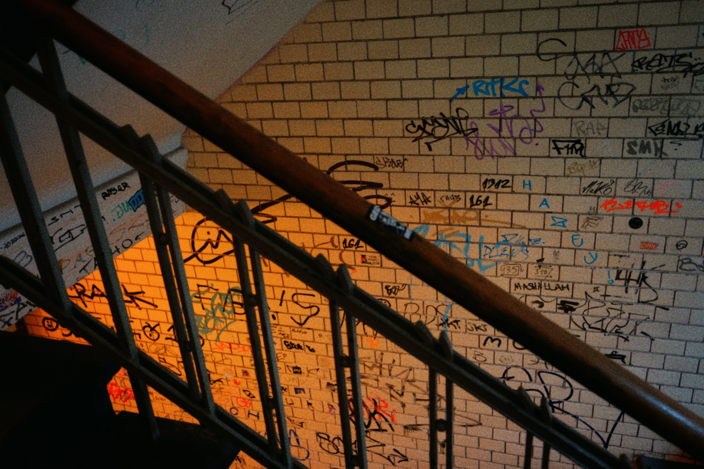

Photography
Capturing everything in front of my lens (if I manage to get my focus right). Current gear: Fujifilm X-T20 with Fujifilm XF 18-55mm f/2.8-4 R LM OIS, TTartisan AF 35mm f/1.8, and Samyang 12mm f/2 NCS CS. Some older photos was shot with the Fujifilm X-A2, but it has since been sold.

Neon Sign in Stockholm
Fujifilm X-T20 • Fujifilm XF 55mm f/4 • Edited using Darktable

Atomium, Belgium
Fujifilm X-T20 • Fujifilm XF 55mm f/4 • Edited using Window's built in image editor

Early Astrophotography
Fujifilm X-T20 • Samyang 12mm f/2 NCS CS • Edited using Darktable

Berlin From Above
Fujifilm X-T20 • Fujifilm XF 34mm f/5.6 • Edited using Snapseed

Late Night Countryside Astrophotography
Fujifilm X-T20 • Samyang 12mm f/2 NCS CS • Edited using Darktable

Berlin Stairwell
Fujifilm X-T20 • Fujifilm XF 18mm f/2.6 • Edited using Snapseed
DarktableOberbaumbrücke, Berlin
Fujifilm X-T20 • Fujifilm XF 20mm f/5.5 • Edited using Snapseed